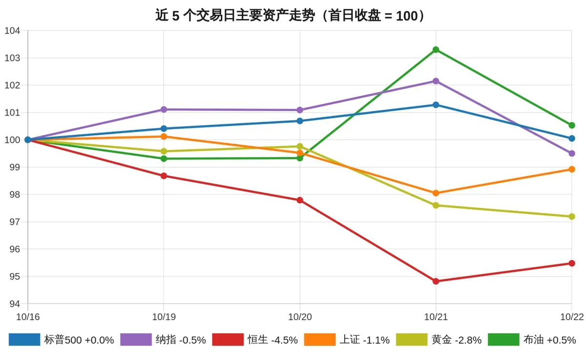

环球要闻半岛电视台 / 法国24 / 路透社 / CNA全球
法国周末抗议前大举布防，多地宵禁限行
法国当局宣布收紧安保措施，以防上周末的暴力骚乱重演。据半岛电视台报道，巴黎将夜间宵禁延长至周一，马赛和里昂禁止集会、实施宵禁并限制本周六公共交通，警力部署比上周末增加20%。总统马克龙周四宣布周末只批准工会示威，引发学生团体强烈批评；他周五与国防委员会开会，并将会见学生代表。上周末全法逾50万人上街，示威演变为暴力与抢劫，此后已有2700人被捕。
2026-10-23 · 环球要闻 · 每日精选

以 5 个交易日前的收盘价为 100，比较股市、黄金与原油的累计涨跌：标普500+0.0%，纳指−0.5%，恒生−4.5%，上证−1.1%，黄金−2.8%，布油+0.5%。数据来源：Yahoo Finance（各市场按当地交易日收盘价）。
法国当局宣布收紧安保措施，以防上周末的暴力骚乱重演。据半岛电视台报道，巴黎将夜间宵禁延长至周一，马赛和里昂禁止集会、实施宵禁并限制本周六公共交通，警力部署比上周末增加20%。总统马克龙周四宣布周末只批准工会示威，引发学生团体强烈批评；他周五与国防委员会开会，并将会见学生代表。上周末全法逾50万人上街，示威演变为暴力与抢劫，此后已有2700人被捕。
据约旦官方媒体，两名枪手在约旦中部卡拉克省一座教堂的葬礼上开枪，造成至少7人死亡、另有10人受伤。报道称，身份不明的枪手乘车抵达，在教堂内开枪后逃离现场。政府发言人穆罕默德·莫马尼表示，安全部队已部署。一名悼念者告诉约旦国家电视台，事发时教堂内有数十人，两名袭击者持步枪和手枪向悼念者射击数分钟。
以色列军方称，两名以色列士兵在约旦河西岸希伯伦市入口一处军事检查站遭两名疑似巴勒斯坦枪手射击身亡，另有以色列人受伤，枪手随后被击毙。以军称在袭击者车中发现大量弹药，认为其原计划在附近35号公路发动更大规模袭击。总理内塔尼亚胡表示已下令军方准备从周五晚些时候起全面封锁约旦河西岸，并称以色列准备采取“广泛行动”。此次袭击发生在以色列大选前四天。
据官方媒体，西藏那曲发生7级地震，造成至少16人死亡、数十人受伤，数百间房屋倒塌。新华社援引当地应急管理部门称，震中位于那曲巴青县，地震发生在周四夜间。据BBC报道，另有65人受伤，其中11人重伤，当地已宣布进入应急状态并派出救援队，12400多人被转移安置。美国地质调查局称震源深度约11英里，并记录到至少7次4.3至5.2级余震。
乌克兰方面表示，尽管美国总统特朗普称马斯克已恢复相关服务，乌军使用的星链卫星网络仍存在限速问题。据卫报报道，乌官员周五上午称速度仍被限制在约每小时100英里，未观察到限制解除。BBC援引国防部消息人士称，无人机在时速161公里时失去连接的情况仍在出现。泽连斯基周五宣布，乌克兰将与芬兰企业合作建设独立卫星通信系统。
据BBC报道，强台风“灿皮”周五逼近台湾东北海岸，东亚地区数百架次航班取消，台湾学校和办公楼关闭。报道称，台风是否登陆尚不确定，预报将带来90厘米降雨。路透社称台湾在台风来临前停摆，近1000架次航班取消。南华早报报道，香港与台湾之间70多架次航班受影响，台风还威胁上海和日本。
据警方，巴黎以西的特拉普镇周五发生驾车枪击事件，一名男子从车内开枪，造成1人死亡、4人受伤，其中包括一名12岁儿童。法国24报道称，检方正在调查此案。BBC报道说，警方将此案作为恐怖袭击处理，反恐警察已介入调查，总理勒科尔尼称这是“非常严重的事件”。纽约时报称，枪手在首都西南多处地点随机开枪后被捕，反恐检察官正调查种族或宗教动机。
据德国之声报道，肯尼亚和尼日利亚首次确诊的埃博拉患者可能曾在乌干达恩德培国际机场擦肩而过。非洲疾控中心应急准备与响应负责人曼库拉称，两名患者均于10月3日经过该机场，但是否相遇或发生传播尚未确定。乌干达坚称本国无活跃病例。瑞士方面否认尼日利亚患者曾前往刚果（金）的说法。尼日利亚卫生部长帕特确认阿布贾出现一例输入性病例，患者为一名近期到访东非的女性。
据BBC报道，研究人员在广泛使用的服务器端编程语言PHP中发现两个漏洞，编号为CVE-2026-109618和CVE-2026-109619，严重程度被评为9.2分（满分10分），影响过去十年发布的多个版本。协助发现漏洞的安全公司Wiz称，PHP驱动全球70%的网站。各国政府和网络安全机构敦促网站所有者检查并安装补丁，目前尚无漏洞被成功利用的报告。卫报称，全球网站已遭数百万次利用尝试。
据南华早报援引官方媒体，在中国出台新的出口规定数天后，DeepSeek与MiniMax获得开源许可。路透社援引官方媒体关联机构称，两家公司获批可全球使用其人工智能技术。
据南华早报报道，英伟达首席执行官黄仁勋将“主权人工智能”推广活动带到哈萨克斯坦，并对人工智能泡沫担忧不以为意。
据卫报报道，布伦特原油周五早间上涨1%，至每桶114.72美元，为5月以来最高水平。此前德黑兰表示，若美国与以色列对伊朗发动新的袭击，将打击海湾地区的石油设施、海底电缆、数据中心和人工智能设施。金融时报称，油价自5月以来首次触及115美元，全球股市则受人工智能担忧拖累。
据法国24报道，法国正等待穆迪的评级决定，市场普遍预期其将被下调。报道称，生活成本抗议之际，法国公共债务不断攀升，相关担忧已推动该国10年期国债收益率自相关时期以来首次升破5%。路透社称，受骚乱冲击的法国即将迎来穆迪的评级裁决。
据CNA报道，法国奢侈品集团开云旗下旗舰品牌古驰第三季度收入下降6%，受中国大陆和日本需求疲软拖累，分析师此前预期降幅为2.8%。开云股价周五在巴黎早盘下跌10.7%。集团第三季度销售额按有机口径下降1%，至33亿欧元。首席执行官德梅奥表示，古驰的复苏仍是首要任务。
据卫报报道，巴克莱银行将裁员5000人，约占其全球9.3万名员工的5%，这是节省成本计划的一部分。首席财务官安娜·克罗斯周四表示，此举旨在2027年节省逾11亿英镑，约60%的调整涉及支持职能，包括减少开发人员，因为人工智能提高了员工效率。该行还宣布向股东再返还5亿英镑，并公布7月至9月季度税前利润23亿英镑，同比增长12%。
换个词，再找找。